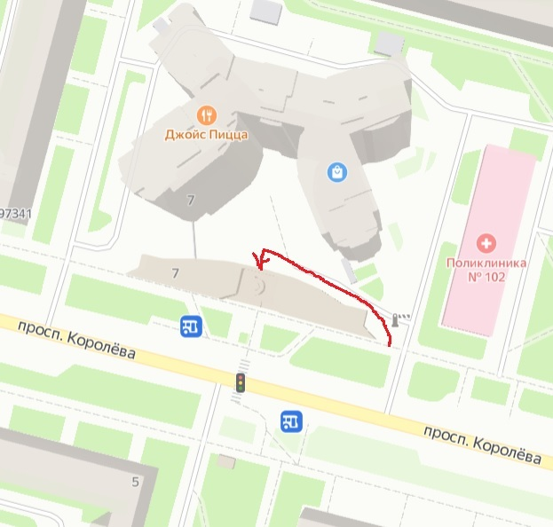

Храм святого праведного воина Феодора Ушакова
на проспекте Королёва города Санкт-Петербурга

Расписание богослужений
Храм открыт:
- Вторник-пятница:
- 12:00 - 17:00
- Суббота:
- 15:00 - до окончания богослужений
- Воскресенье:
- 09:00 - до окончания богослужений
Время начала богослужений:
- Вечерня:
- 17:00
- Всенощное бдение:
- 17:00
- Утреня:
- 09:00
- Божественная Литургия:
- 10:00
По субботам после вечерни служатся молебен и панихида.
Исповедь происходит до литургии, в течение утрени или после вечернего богослужения в субботу.
Более подробное расписание богослужений можно посмотреть в официальной группе храма в социальной сети ВКонтакте: https://vk.com/hram_ushakov


О храме
В сентябре 2011 года по благословению митрополита Санкт-Петербургского и Ладожского была образована православная приходская община в честь святого праведного воина Феодора Ушакова на проспекте Королева, дом 7.
Храм для общины построен и передан в дар епархии строительной компанией «С.Э.Р.» в 2012 году.
16 декабря 2018 года высокопреосвященнейший Варсонофий, митрополит Санкт-Петербургский и Ладожский, освятил храм и совершил иерейскую хиротонию диакона Александра Стебенева.
Контакты

Адрес: 197341, Санкт-Петербург, пр. Королёва, дом 7
Телефон: 941-40-52
E-mail: ushakov_church@mail.ru
Остановка общественного транспорта: "Проспект Королёва - Поликлиника"
Ближайшая ст. метро: "Пионерская"
Группа храма Вконтакте: https://vk.com/hram_ushakov
Группа любительского хора: https://vk.com/club136087215
Группа молодежки: https://vk.com/club212152452
Телеграм-канал молодежки: https://t.me/ushakovchurch
Телеграм-канал Воскресной школы: https://t.me/+3hb9Q4Yunp44MjRi
Вход в храм находится с обратной стороны Торгового Центра (обойти ТЦ с правой стороны и подняться вверх по пандусу).